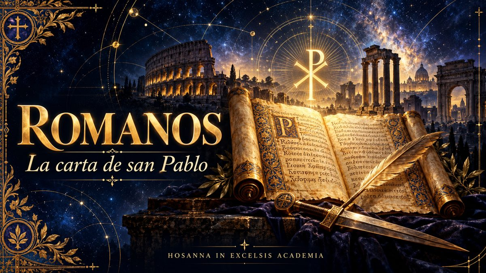

NUEVO EPISODIOPor Hugo Delgado
Estudio de la Carta a los Romanos
Ya disponible: Episodio 1 · Introducción.
ESCUCHAR EPISODIO 1Un recorrido pausado por la carta de san Pablo a los Romanos: la justificación, la gracia y la vida nueva en Cristo, leídas con la Tradición de la Iglesia.

Episodio 1 de la serie Carta a los Romanos del podcast Hosanna in Excelsis.

NUEVO EPISODIOYa disponible: Episodio 1 · Introducción.
ESCUCHAR EPISODIO 1